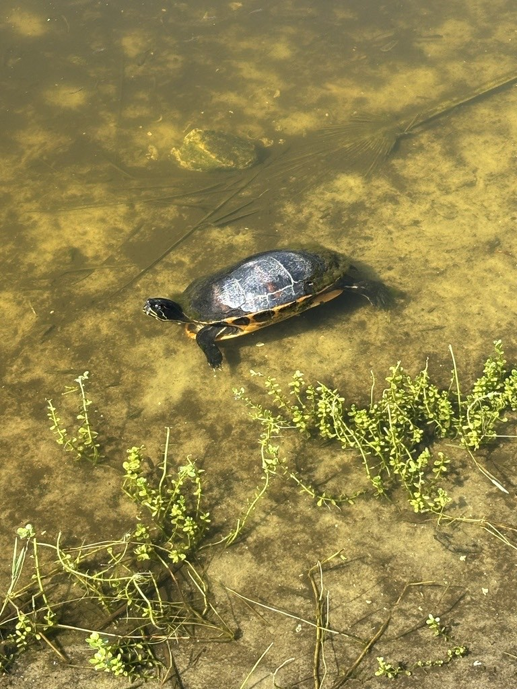

- The Florida red-bellied cooter is a large, dark basking turtle named for the reddish wash on its underside and shell.
- It is a Florida native, at home in the state's ponds, lakes, and slow rivers.
- Adults are mostly vegetarian, grazing on underwater plants — turtles that essentially tend the pond's vegetable garden.
- It has an unusual nesting trick: females sometimes lay their eggs right in the warm nest mounds of alligators, where the guarding gator unintentionally protects them.
High-domed and dark, with reddish vertical bars on the side scutes.
Washed with orange to reddish color.
Dark with yellow stripes, including an arrow-shaped stripe between the eyes.
Large, with females bigger than males.
Essentially silent.
A big, dark, high-domed turtle basking at the pond, showing reddish bars on the shell. The red-tinted underside and the arrow-shaped head stripe help separate it from the similar sliders and peninsular cooter.
Adults are mostly herbivorous, grazing on submerged aquatic plants and algae; young turtles also take some insects and other small animals.
Basking on logs and banks at the ponds on sunny days, often among sliders and peninsular cooters. Look for the reddish tones on the shell.
Year-round resident. Most visible basking on warm, sunny days.
Watch from a distance and do not handle or feed it. Let basking turtles keep their sunning spots.

- © Ardeljan_A_691 (CC-BY-NC), via iNaturalist